The project in five minutes
What RNA velocity is, what breaks in current methods, and what TARVI does about it — no equations required.
What is RNA velocity?
A single-cell RNA-seq experiment destroys the cells it measures. You get one static snapshot of thousands of cells and no way to watch any of them develop. RNA velocity recovers the missing arrow of time from that snapshot alone.
The trick rests on a detail of how cells make RNA. A gene is first transcribed into unspliced pre-mRNA; introns are then spliced out to give mature spliced mRNA, which is eventually degraded:
gene —α→ unspliced (u)
—β→ spliced (s) —γ→
degraded
α = transcription rate · β = splicing rate ·
γ = degradation rate
Modern droplet protocols count the two pools separately. Because unspliced RNA has to become spliced RNA, the unspliced pool is a leading indicator: a gene switching on shows a spike of unspliced RNA before its spliced count catches up. Velocity is the rate of change of the mature pool, v = βu − γs — positive when a gene is being switched on, negative when it is shutting down.
Do that for every gene and each cell gets a vector: an arrow pointing at its own near future.
A concrete example
Suppose we measure two genes in Cell 1 and also estimate their velocities:
| Gene 1 | Gene 2 | |
|---|---|---|
| Cell 1 — measured count | 20 | 30 |
| Cell 1 — velocity | +3 | −2 |
| Cell 1 — extrapolated future | 23 | 28 |
| Cell 2 — measured count | 23 | 28 |
Cell 1's extrapolated future is Cell 2's present. We have just learned that Cell 1 is heading toward the state Cell 2 occupies — a direction of development, from a snapshot, with no time-course experiment. Repeat across every cell and the arrows knit together into a differentiation trajectory.
Where existing methods break
A decade of estimators — velocyto, scVelo, VeloVI, TFvelo — has refined this idea considerably. Three structural problems survive all of them.
1 · Transcription is frozen
The rate α is one number per gene, shared by every cell. But genes are switched on by transcription factors whose abundance differs cell to cell. The model has no vocabulary for “these two cells differ in regulatory drive, not developmental stage” — so it silently reports the difference as a difference in time.
2 · Latent time is an afterthought
Cell time falls out of the fit as a by-product of state assignment, with no direct supervision. It is uncalibrated against real developmental ordering, and discontinuous where the kinetic state flips.
3 · Local arrows, global trajectory
Velocity is a local derivative; a trajectory is a global object. Estimated independently, they disagree — producing reversed flows and discontinuous streamlines that a downstream analyst has no way to detect.
What TARVI adds
TARVI keeps the VeloVI variational-autoencoder backbone and its four kinetic states, and attacks all three problems inside a single probabilistic framework.
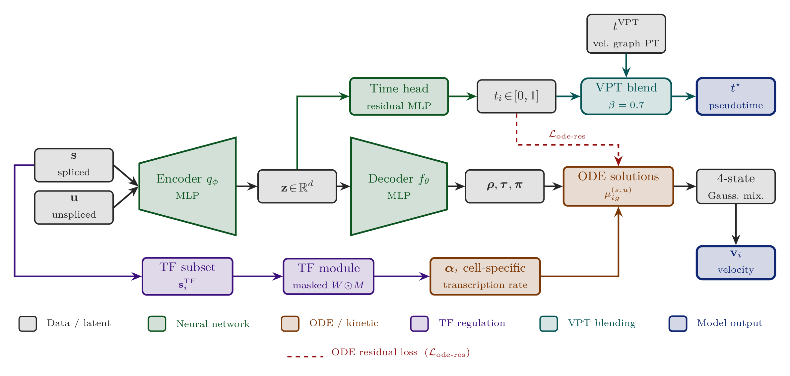
1 · Cell-specific, TF-regulated α
A masked, learnable TF→gene matrix built from ENCODE ChIP-seq and ChEA priors turns the static $\alpha_g$ into a per-cell $\alpha_{ig}$, read from each cell's own transcription-factor expression.
2 · Supervised time head
A small residual MLP on the latent code produces a calibrated $t_i\in[0,1]$, trained by two complementary losses — a stop-gradient self-distillation term and an ODE-residual term scored against observed expression.
3 · Geometric regularisers
A pairwise hinge penalty punishes velocity arrows that run backwards in time; a graph-Laplacian term makes cells that look alike sit at similar points in the trajectory.
4 · Velocity–pseudotime blending
Diffusion pseudotime on TARVI's own velocity graph is convex-blended with the learned time, grounding a smooth local signal in global topology.
How well does it work?
Five biologically diverse datasets, four baselines, eight metrics, identical preprocessing throughout.
The honest summary. On the directional metrics TARVI is on par with the strongest baseline, not ahead of it — the gaps there are within run-to-run drift. The real win is temporal: pseudotime calibration improves by an order of magnitude more than that drift, which is what turns a plausible-looking arrow field into a trajectory you can actually order cells along.
Full tables, per-dataset breakdowns, the component ablation and the qualitative panels are all in Part 2.
Getting started
conda env create -f environment.yml
conda activate tarvi
pip install -e .import scvelo as scv
from tarvi import TARVI, preprocess_data
adata = scv.datasets.pancreas()
adata = preprocess_data(adata)
TARVI.setup_anndata(adata, spliced_layer="Ms", unspliced_layer="Mu")
model = TARVI(adata, n_latent=10,
use_tf_regulation=True,
tf_data_dir="./data/TFvelo")
model.train(max_epochs=500, accelerator="gpu", devices=[0])
adata.layers["velocity"] = model.get_velocity(n_samples=25, smooth=True).values
adata.obs["latent_time"] = model.get_latent_time(n_samples=25).mean(axis=1)
adata.obsm["X_tarvi"] = model.get_latent_representation()📄 Paper
The MERCon 2026 manuscript — 6 pages, the peer-reviewed account.
📘 Methodology notes
A 28-page technical companion deriving every equation from first principles.
📑 Supplementary
The full component ablation, background theory, and scope notes.
💻 Code
The implementation, benchmark harness, and evaluation suite — MIT licensed.
The complete story
Everything: the biophysics and its exact solutions, what the data can and cannot identify, the architecture and why each piece is shaped the way it is, how a model trains with no ground truth, and the full experimental record.
Contents
- The kinetic model and its exact solutions
- What the data can and cannot tell us
- Data preparation
- Architecture: why a VAE at all
- Contribution 1 — TF-regulated transcription
- Contribution 2 — the supervised time head
- Training without ground truth
- Inference: velocity and three notions of time
- Contribution 3 — velocity–pseudotime blending
- Related work
- Datasets, metrics, protocol
- Results
- Component ablation
- Qualitative comparison
- Reproducibility & limitations
- Conclusion
- Citation & references
1 · The kinetic model and its exact solutions
Mass-action kinetics
The three-step pipeline gives a coupled pair of first-order ODEs per gene:
$$\frac{du}{dt}=\underbrace{\alpha}_{\text{transcribed}}-\underbrace{\beta u}_{\text{spliced away}}, \qquad \frac{ds}{dt}=\underbrace{\beta u}_{\text{arrives}}-\underbrace{\gamma s}_{\text{degraded}}.$$Each term follows from elementary reaction kinetics: $\alpha$ is zeroth order (polymerase output does not depend on how much RNA already exists), while $\beta u$ and $\gamma s$ are first order. The coupling is what matters — $\beta u$ is subtracted from the first equation and added to the second, because nothing is lost in transit. It is the same molecules moving between pools. That conservation is the entire basis of RNA velocity.
Note that translation does not appear. Protein is not measured in scRNA-seq, so $\gamma$ is a degradation rate, not a translation rate.
Induction, solved
The unspliced equation is linear; multiplying by the integrating factor $e^{\beta t}$ turns the left side into a product rule in reverse, and imposing $u(0)=0$ (the gene starts off) gives
$$u(t)=\frac{\alpha}{\beta}\big(1-e^{-\beta t}\big).$$Substituting that into the spliced equation and applying the factor $e^{\gamma t}$ with $s(0)=0$:
$$s(t)=\frac{\alpha}{\gamma}\big(1-e^{-\gamma t}\big) +\frac{\alpha}{\gamma-\beta}\big(e^{-\gamma t}-e^{-\beta t}\big).$$The second term is the lag term. It is what makes $s$ trail behind $u$, and therefore what makes the $(s,u)$ trajectory trace a loop rather than a straight line. Everything downstream — identifiability of the rates, the gene filter, the initialisation — follows from the existence of that lag.
Repression
At the switch time the gene is turned off, so $\alpha=0$. The equations are the same with new initial conditions $(u_0,s_0)$ — the values reached at the end of induction:
$$u(t)=u_0e^{-\beta t},\qquad s(t)=s_0e^{-\gamma t}-\frac{\beta u_0}{\gamma-\beta}\big(e^{-\gamma t}-e^{-\beta t}\big).$$These four expressions are implemented term for term in tarvi/_module.py.
Because they are closed-form, no numerical integration is ever performed:
evaluating the model at any time is a handful of exponentials, fully differentiable and
cheap.
Steady states and the phase portrait
Setting both derivatives to zero gives $u^*=\alpha/\beta$ and $s^*=\alpha/\gamma$, hence the relation that recurs throughout:
$$\frac{u^*}{s^*}=\frac{\gamma}{\beta}.$$The phase portrait is the scatter of $(s,u)$ across all cells for one gene. During induction $u$ rises first and $s$ lags, producing an upper-left arm; during repression $u$ falls first and $s$ lags again, producing a lower-right arm. Together they trace a counter-clockwise loop whose steady-state diagonal has slope $\gamma/\beta$. This geometry is the sole source of information about the kinetic rates.
A removable singularity at $\gamma=\beta$
Both expressions for $s$ divide by $(\gamma-\beta)$, which is unstable when a gene has $\gamma\approx\beta$ and undefined at equality. Writing $\gamma=\beta+\varepsilon$ and expanding to first order gives the finite repeated-root solution
$$s(t)\xrightarrow{\ \gamma\to\beta\ }\frac{\alpha}{\beta}\big(1-e^{-\beta t}\big)-\alpha\,t\,e^{-\beta t},$$so the singularity is removable. The implementation does not branch on this case; it adds $\varepsilon=10^{-6}$ to the denominator, which is adequate since exact equality has measure zero.
2 · What the data can and cannot tell us
An obvious objection on first reading the model: the splicing and degradation rates were never measured, so how can we use them?
The rates are inferred, not measured
$\beta$ and $\gamma$ are free parameters, one per gene, learned by gradient descent:
$$\beta_g=\mathrm{clamp}\big(\mathrm{softplus}(\theta^\beta_g),0,50\big),\qquad \gamma_g=\mathrm{clamp}\big(\mathrm{softplus}(\theta^\gamma_g),0,50\big).$$Softplus enforces positivity (negative rates are physically meaningless); the clamp keeps the exponentials from overflowing. They are learnable because the ODE solutions are the means of the likelihood: when observed $u$ and $s$ are scored against that likelihood and the error is backpropagated, the gradient moves $\beta$ and $\gamma$ toward values that make the predicted curve pass through the observed data cloud. This is ordinary maximum likelihood — an unmeasured quantity recovered from the pattern it leaves behind in quantities that were measured.
What identifies them
| Loop feature | What it determines |
|---|---|
| Slope of the steady-state diagonal | the ratio $\gamma/\beta$ |
| Width / curvature of the loop | how different $\beta$ and $\gamma$ are (the lag) |
A gene whose phase portrait is a shapeless blob carries no information about its own kinetics. That is the entire justification for the gene filter.
Scale invariance — and two consequences
Proposition (scale non-identifiability). For any $c>0$, the reparameterisation $\alpha\to c\alpha$, $\beta\to c\beta$, $\gamma\to c\gamma$, $t\to t/c$ leaves $u(t)$ and $s(t)$ exactly unchanged.
Every rate appears either as a ratio of two rates or multiplied by $t$, so the substitution cancels identically in both branches.
The data therefore cannot distinguish a slow process observed over a long interval from a fast one observed over a short interval. Only ratios of rates are identifiable. Two consequences, both visible in how results are reported:
- The time scale is a convention. The model fixes the remaining degree of freedom by setting $t_{\max}=20$ and initialising $\beta\approx1$, so all rates are expressed in units of the splicing rate. Latent time is in arbitrary units and only its ordering is meaningful — which is why evaluation reports Spearman correlation of pseudotime rather than absolute error.
- Velocity magnitude is arbitrary; direction is not. Under the same rescaling $v\to cv$. Every arrow's length is defined only up to one global constant, but its direction is invariant — which is why every reported metric (CBDir, velocity confidence, cosine coherence) is direction-based.
What keeps the fit well behaved
Because the problem is unidentifiable in general and non-convex in practice, several components exist specifically to constrain it: the end penalty, which forces the induction curve at the switch time onto a data-derived anchor and thereby constrains $\gamma/\beta$; the sparse Dirichlet prior on state weights, which blocks degenerate fits that hedge across all four states; the ODE residual loss, which ties latent time to observed expression so the rates cannot drift to compensate for a bad time estimate; and data-driven initialisation, which places the optimiser in a sensible basin from the start.
3 · Data preparation
Moments and scaling
Standard preprocessing uses scv.pp.moments after QC, normalisation ($10^4$
counts/cell), log1p, and top-2000 highly-variable-gene selection (Scanpy/scVelo). Moments
matter: raw droplet counts are far too sparse — dominated by dropout zeros — to
fit a smooth ODE against, so each cell's counts are averaged over its kNN neighbourhood.
TARVI then adds two steps of its own:
- Min–max scaling of
Ms/Muto $[0,1]$. Required because the likelihood uses a Gaussian with a shared per-gene scale; without rescaling, highly expressed genes would dominate the reconstruction term entirely. - An $r^2$-based gene filter, described next.
The gene filter
A throwaway steady-state fit is run purely to compute a screening statistic:
scv.tl.velocity(adata, mode="deterministic")
adata = adata[:, np.logical_and(adata.var.velocity_r2 > 0,
adata.var.velocity_gamma > 0)].copy()
adata = adata[:, adata.var.velocity_genes].copy()Deterministic mode is the original steady-state estimator: per gene it fits a line $u\approx\gamma s$ through extreme-quantile cells (those assumed to be at steady state).
| Value | Meaning |
|---|---|
| $R^2=1$ | the line passes through every point exactly |
| $R^2=0$ | the line is no better than predicting the mean of $u$ |
| $R^2<0$ | the line is worse than predicting the mean |
Negative $R^2$ is possible — and is precisely what the filter targets — because the line is fitted on a subset of cells and then scored on all of them. A gene with no coherent phase portrait yields an arbitrarily placed line that scores worse than a flat mean. The companion condition $\gamma>0$ rejects a negative slope, which would imply that unspliced and spliced counts anti-correlate — impossible, as it would require a negative degradation rate.
Retaining genes that fail these tests would cost twice over: model capacity is spent fitting an ODE to noise, which given the non-convexity can drag the optimiser into a poor basin; and because velocity direction is computed across genes, uninformative genes dilute the signal in every cell's arrow.
A note on circularity
This is a pre-filter that uses a simpler model to select genes for a more complex one. The bar is deliberately permissive ($>0$, not $>0.5$) so that it removes genes carrying no signal, rather than selecting genes that happen to suit the steady-state model's assumptions.
Initialisation
These ODEs admit many poor local optima, so initialisation is consequential. For each gene the median over the top 1% of cells by unspliced count gives $(u_{\text{upper}}, s_{\text{upper}})$ — cells near the top of induction, close to steady state:
| Quantity | Initialisation |
|---|---|
| $\alpha$ | $\mathrm{softplus}^{-1}(u_{\text{upper}})$, since $u^*=\alpha/\beta$ with $\beta\approx1$ |
| switch anchor $(u_0,s_0)$ | $(u_{\text{upper}},s_{\text{upper}})$ |
| $\gamma$ | $u_{\text{upper}}/s_{\text{upper}}$ — the steady-state slope |
| $\beta$ | $\mathrm{softplus}(0.5)\approx0.97$, i.e. effectively 1 |
Setting $\beta\approx1$ is the concrete act of fixing the scale degree of freedom identified above.
4 · Architecture: why a VAE at all
A parameter-counting argument
The natural question is why a neural network is involved, when the underlying model is a small ODE with a handful of parameters. Fitting it requires, for every cell and every gene, a position in the kinetic cycle: induction progress $\rho$, repression progress $\tau$, and four state probabilities $\pi$. For $N=3000$ cells and $G=1000$ genes that is on the order of $1.8\times10^7$ free parameters fitted against $6\times10^6$ observations — hopelessly overparameterised, and every cell fitted in isolation with no information shared between similar cells.
Amortised inference replaces those per-cell parameters with a function. An encoder maps a cell's profile to a low-dimensional state $z$; a decoder maps $z$ to per-gene kinetic variables. The model then carries roughly $10^5$ shared weights instead of $10^7$ per-cell parameters, and every cell's estimate is informed by every other cell because all pass through the same weights.
The decoder does not predict expression. It predicts ODE parameters, which then pass through the fixed analytic solutions of §1. The physics is imposed, not learned. That is what keeps the model mechanistic and its outputs kinetically interpretable, rather than a black-box autoencoder that happens to reconstruct well.
Two further benefits follow from choosing a variational autoencoder over a plain one: the KL term regularises the latent space to be smooth and continuous, so nearby cells receive nearby codes; and because $z$ is sampled rather than deterministic, repeated forward passes give a posterior over every downstream quantity — uncertainty estimates rather than point estimates.
The encoder, and why $z$ is cell-level
The encoder receives the concatenation of spliced and unspliced profiles and returns $q(z\mid s,u)=\mathcal{N}(\mu_z,\sigma_z^2)$ with $z\in\mathbb{R}^{10}$. That $z$ is a cell-level quantity is not an interpretation but a statement about tensor axes:
| Quantity | Shape | Axes | Level |
|---|---|---|---|
| $\beta,\gamma,t_s$ | [G] | gene only | gene-level |
| $z$ | [N, 10] | cell only | cell-level |
learned_time | [N] | cell only | cell-level |
| $\rho,\tau$ | [N, G] | cell × gene | cell–gene |
| $\alpha$ (TF-regulated) | [N, G] | cell × gene | cell–gene |
| $\pi$ | [N, G, 4] | cell × gene × state | cell–gene |
The encoder's first layer is dense, mapping $2G\to128$: every gene connects to every hidden unit and no per-gene pathway survives. The gene axis is destroyed on the first matrix multiplication, and symmetrically re-created by the decoder's $10\to128\to G$ layers.
It is worth addressing the natural objection — that $z$ is computed from gene expression and so ought to be gene-level. Being computed from an axis is not the same as being indexed by it. A student's grade-point average is computed from every course grade, but is a student-level quantity; “the GPA of Chemistry” is a malformed question because the course axis was summed away. Likewise “the $z$ of gene Sox9” names no object.
Two structural pressures force $z$ to be a genuinely global summary. First, the bottleneck: ten numbers cannot store per-gene information about a thousand genes, so only what is shared across genes survives compression. Second, the same $z$ must explain all genes simultaneously through the decoder; anything gene-specific would be useless to the other $G-1$ genes and is squeezed out during training. That second pressure is exactly what couples the genes together and yields a coherent cell-level trajectory rather than $G$ independent gene clocks.
The decoder: two trunks, three heads
# two independent trunks, both reading z
self.rho_first_decoder = FCLayers(n_in=10, n_out=128) # serves rho and tau
self.pi_first_decoder = FCLayers(n_in=10, n_out=128) # serves pi
# three output heads
self.px_rho_decoder = nn.Sequential(nn.Linear(128, G), nn.Sigmoid())
self.px_tau_decoder = nn.Sequential(nn.Linear(128, G), nn.Sigmoid())
self.px_pi_decoder = nn.Linear(128, 4 * G)$\rho$ and $\tau$ share a trunk, since both describe a position within a phase and can reuse the same features, but receive separate heads because they describe different phases. The state weights get their own trunk entirely.
The gene axis is manufactured by the output layers: each of the $G$ output units is a different learned linear readout of the same shared 128-dimensional hidden vector. Gene $g$'s row poses its own question of the cell state. That is how a single ten-dimensional code can specify positions for a thousand genes — the genes differ in how they read the cell state, not in what state information reaches them.
Why sigmoid on $\rho$ and $\tau$
Neither variable is a time. Both are fractions of a phase, converted to times by scaling:
$$t_{\text{ind}}=t_s\cdot\rho\in(0,t_s),\qquad t_{\text{rep}}=(t_{\max}-t_s)\cdot\tau\in(0,t_{\max}-t_s).$$This is a parameterisation device, not a cosmetic choice. Predicting an absolute time and hoping it lands in the correct phase would require a penalty term and could still be violated. Here the constraint is structural: the sigmoid bounds the output to $(0,1)$, and multiplying by the phase width makes it arithmetically impossible for an induction time to exceed the switch point. No loss term is needed and no invalid state is reachable.
Why softplus on $\pi$: concentrations are not probabilities
The decoder emits Dirichlet concentrations — positive and unnormalised. The probabilities appear one step later, by sampling:
px_pi_alpha = Softplus(reshape(px_pi_decoder(h_pi), (N, G, 4))) # decoder output
px_pi = Dirichlet(px_pi_alpha).rsample() # what is usedTwo things follow. Confidence is represented separately from preference:
the concentrations $(10,1,1,1)$ and $(1.0,0.1,0.1,0.1)$ induce the same mean probabilities but
very different certainty — a distinction a plain softmax cannot express, since it retains
only the ratio. And rsample is the reparameterised draw, so gradients pass through
the state assignment; this is why no argmax appears anywhere in the model, and the
state assignment stays a differentiable mixture throughout.
What the decoder deliberately does not produce
| Quantity | Source | Why not the decoder |
|---|---|---|
| $\beta,\gamma$ | global parameters [G] | properties of the gene, not of the cell; no cell axis required |
| $\alpha$ | TF module, read from data | requires specific TF identity, which cannot survive the ten-dimensional bottleneck |
| $t_s$ | global parameter [G] | a property of the gene's kinetics, shared by all cells |
The division of labour is clean: the decoder answers where a cell sits in each gene's cycle; the rate parameters answer how fast that cycle runs.
The four states
| State | Time | Predicted $(u,s)$ |
|---|---|---|
| Induction | $t=t_s\rho$ | induction solutions |
| Induction steady | — | $(\alpha/\beta,\ \alpha/\gamma)$ |
| Repression | $t=(t_{\max}-t_s)\tau$ | repression solutions |
| Repression steady | — | $(0,0)$ |
Each state contributes a Gaussian centred on its predicted $(u,s)$ with a learned per-gene
scale, combined by MixtureSameFamily weighted by the sampled $\pi$. The
repression-steady component receives a scale reduced tenfold, since it is an exact point rather
than a fitted curve.
5 · Contribution 1 — TF-regulated transcription
Building the prior
A binary mask of known regulatory relationships is assembled from ENCODE ChIP-seq and ChEA 2016. TF–target pairs are parsed from both sources, gene names resolved case-insensitively against the dataset so only TFs and targets actually present survive, evidence counted per pair, and the top $K\le99$ TFs per target retained. The result is a mask $M\in\{0,1\}^{G\times T}$ with weights warm-started as $W^{(0)}_{gk}=0.1\,\rho_S(\mathbf{s}_g,\mathbf{s}_k)$, the Spearman correlation between each TF's and target's expression.
The cell-specific rate
$$\alpha_{ig}=\mathrm{clamp}\Big(\mathrm{softplus}\Big(\textstyle\sum_k\big(w_{gk}\odot M_{gk}\big)\,\mathrm{TF}_k(i)+b_g\Big),0,50\Big)$$where $b_g$ is a learnable basal rate warm-started from the static per-gene $\alpha$, and $\mathrm{TF}_k(i)$ is the spliced expression of the $k$-th transcription factor in cell $i$ — read directly from the data rather than from $z$.
Three points deserve emphasis. The mask is applied inside the forward pass, so gradients for non-edges are structurally zero and the model cannot invent regulation — it learns only the strength and sign of edges that ChIP-seq evidence already supports. The static $\alpha$ is frozen when TF regulation is active, so there is no competing pathway. And a mild L1 penalty ensures each gene ends up driven by a few dominant regulators rather than all 99, which makes the fitted $W$ readable as a regulatory network.
Where VeloVI has $\alpha_g$ — a single number per gene shared by all cells — TARVI has $\alpha_{ig}$, an $[N\times G]$ matrix that varies across the manifold according to which transcription factors each cell expresses.
Velocity is directly proportional to $\alpha$
$\alpha$ appears in exactly three places, always as a multiplicative factor: the amplitude of the induction curve, the induction plateau $(\alpha/\beta,\alpha/\gamma)$, and — only through $(u_0,s_0)$ — the repression branch. Factoring the induction solution makes the separation explicit:
$$u(t)=\alpha\cdot\underbrace{\tfrac{1}{\beta}\big(1-e^{-\beta t}\big)}_{\text{shape — independent of }\alpha}.$$Substituting both induction solutions into $v=\beta u-\gamma s$, the terms collapse:
$$v_{\text{ind}}(t)=\frac{\alpha\beta}{\gamma-\beta}\big(e^{-\beta t}-e^{-\gamma t}\big).$$Induction velocity is exactly proportional to the transcription rate. $\alpha$ is not a peripheral nuisance parameter — it is the amplitude of the velocity itself. Doubling a cell's transcription rate exactly doubles its velocity for that gene at a fixed time.
Why a cell-specific $\alpha$ helps
It separates amplitude from time
With one $\alpha$ per gene, every cell lies on a single shared curve. The only mechanism available to explain a cell with high expression is that it has progressed further through induction — so genuine differences in regulatory drive are silently re-encoded as differences in developmental time. Consider two cells observed at the identical value $u=0.5$:
| TF activity | $\alpha$ | inferred $t$ | $du/dt=\alpha-\beta u$ | |
|---|---|---|---|---|
| Cell A | high | 2.0 | 0.29 | 1.5 |
| Cell B | low | 0.6 | 1.79 | 0.1 |
Cell A is early on a tall curve and still climbing steeply; cell B is near the ceiling of a short curve and has almost stopped. Their instantaneous dynamics differ by a factor of fifteen. A static-$\alpha$ model must assign them the same time and the same velocity; it has no vocabulary for “these cells differ in regulatory drive rather than in developmental stage”.
It costs almost no parameters
A freely fitted $\alpha_{ig}$ would introduce $N\times G$ parameters — entirely unidentifiable, capable of fitting any data exactly and therefore explaining nothing. Instead $\alpha_{ig}$ varies over all $N\times G$ entries while being generated by only $|M|+G$ parameters, shared across every cell. The cell-to-cell variation is supplied by measured transcription-factor expression, not by free parameters: cell-specificity is bought with data rather than with degrees of freedom.
It is a second channel that bypasses the bottleneck
$z$ has ten dimensions and therefore necessarily destroys gene-specific detail. The TF pathway reads TF expression directly from the data, not through $z$. Specific regulatory identity — “this particular cell strongly expresses this particular factor” — therefore reaches $\alpha$ even though it could never survive compression into ten dimensions.
It yields a readable network
After training, $W\odot M$ is a gene-by-TF matrix of learned regulatory strengths with signs, sparsified by the L1 penalty. This is a scientific output — an inferred regulatory network — obtained as a by-product of velocity estimation.
A note on attribution
The mechanism above is the design rationale for a cell-specific $\alpha$. The component ablation, however, attributes most of the pseudotime improvement to the ODE-residual loss and to velocity–pseudotime blending, with TF regulation contributing principally on the velocity-field and interpretability side. Both statements should be made; claiming the headline metric for this component would overstate what the ablation supports.
6 · Contribution 2 — the supervised time head
VeloVI's cell time $t^{\text{ODE}}_i=\mathbb{E}_{k\sim\pi_i}[t_k(\rho_i,\tau_i,t_s)]$ is discontinuous at state boundaries and weakly supervised. TARVI adds a dedicated residual MLP on $z$:
$$h_1=\mathrm{ReLU}(W_1z)+W_{\text{skip}}z,\qquad h_2=\mathrm{ReLU}\big(W_2\,\mathrm{LN}(h_1)\big),\qquad t_i=\sigma(W_3h_2)\in[0,1].$$Why the input is $z$
Latent time must be one number per cell, and the only cell-indexed, gene-free representation available is $z$. Beyond that necessity, reading from $z$ has four advantages: the head sees the same cell state that generates the kinetics, so time and the ODE parameters cannot disagree about what cell this is; $z$ is already denoised by the encoder, so pseudotime does not inherit dropout noise; the KL term makes $z$ continuous, so nearby cells automatically receive nearby times; and a $10\to1$ regression is learnable from a few thousand cells, where $2G\to1$ would not be.
There is also a less obvious effect. Because the ODE-residual loss reaches the head, and the head's input is $z$, the gradient continues into the encoder:
$$\mathcal{L}_{\text{res}}\;\to\;t_i\;\to\;\text{time head}\;\to\;z\;\to\;\text{encoder}.$$The supervision therefore reshapes the latent space itself to be temporally organised. This is a substantial part of why pseudotime improves.
The skip connection, and a silent failure mode
The cell state travels two routes which are then summed. Because input and output dimensions differ ($\mathbb{R}^{10}$ against $\mathbb{R}^{128}$) the shortcut cannot be the identity and must itself be a learned projection.
The question is not one of representational capacity — a plain MLP is a universal approximator and could represent any smooth function of $z$, a linear one included. The skip buys no expressiveness. What it buys is what is easy to learn from a random initialisation, and what happens when training goes wrong.
| The learning problem | |
|---|---|
| Without skip | the weights must construct $w^\top z$ from scratch out of rectified pieces |
| With skip | $W_{\text{skip}}$ is the linear part; $W_1$ learns only the deviation |
The failure mode is ties, not error
Without the skip, a ReLU network must approximate a straight line using piecewise-linear segments, which with finitely many active pieces produces a staircase: flat plateaus joined by steps. A staircase has small squared error — it is never far from the correct value — yet every flat segment assigns an identical time to many cells and destroys the ordering within it. Since pseudotime is scored by Spearman correlation, a rank statistic, the training loss can look perfectly healthy while the reported metric collapses. The linear bypass removes the staircase by construction.
It also guarantees a gradient path. Differentiating the two branches, $\partial h/\partial z=\mathrm{ReLU}'(W_1z)W_1+W_{\text{skip}}$: the first term is zero wherever units are dead, the second is always non-zero. This matters more here than in a typical network, because the time head is the only conduit through which the ODE-residual loss reaches $z$. Were the head to close that path, nothing would raise an error — the pseudotime would simply, and silently, get worse.
Finally, the LayerNorm sits after the addition rather than before it: summing two branches yields an output of unpredictable scale, and either branch could dominate by magnitude alone. Normalising the combined signal holds the final sigmoid in its responsive region.
Is the skip strictly necessary? No — a plain two-layer perceptron would in all likelihood train to something reasonable. But the trade is markedly lopsided: the skip costs a single $10\times128$ matrix (1,280 parameters, negligible) and in exchange closes a failure mode the training loss would never have revealed.
7 · Training without ground truth
The principle
No ground-truth velocity, latent time, or kinetic rate is available for any dataset. This appears to make a loss function impossible: a loss compares an answer to a correct answer, and there is no correct answer.
The resolution is that velocity is never optimised. What is optimised is the reconstruction of the observed data. The model proposes rates and times; the ODE converts these into predicted $\hat u,\hat s$; those predictions are scored against what was actually measured. The observed counts are the ground truth. “Unsupervised” here means no external labels, not no target.
Velocity then follows for free, because it is a deterministic function of quantities the reconstruction has already pinned down. The same applies to latent time, state assignment and the TF weights: all are latent variables inferred as a by-product of explaining the data. A quantity that is never directly optimised needs no label.
The bathtub picture. Two connected tanks: a tap fills the first at rate $\alpha$, a pipe drains it into the second at rate $\beta$, and a drain empties the second at rate $\gamma$. The taps are hidden; only the water levels are visible. The model guesses tap settings, predicts the resulting levels, and is corrected by the discrepancy against the measured levels. Velocity — is the second tank filling or draining — is then simple arithmetic on the recovered taps.
A worked example
One cell, one gene. Measured values $u=0.80$, $s=0.30$.
Round 1. The current guess is $\alpha=1,\beta=1,\gamma=2$, with this cell at $t=0.5$ in the induction state. Substituting into the induction solutions gives $\hat u=0.39$, $\hat s=0.08$:
| predicted | measured | error | |
|---|---|---|---|
| $u$ | 0.39 | 0.80 | −0.41 |
| $s$ | 0.08 | 0.30 | −0.22 |
| squared error | 0.21 | ||
Both predictions are too low, so the gradient increases $\alpha$.
Round 2. With $\alpha=2$ and the other parameters unchanged, $\hat u=0.79$, $\hat s=0.15$:
| predicted | measured | error | |
|---|---|---|---|
| $u$ | 0.79 | 0.80 | −0.01 |
| $s$ | 0.15 | 0.30 | −0.15 |
| squared error | 0.021 | ||
The loss has fallen by an order of magnitude. Repeating this across every cell, every gene, for 500 epochs, is the whole training loop.
And then velocity. It was never part of the loss. It is computed afterwards from the recovered rates: $v=\beta u-\gamma s=1\times0.79-2\times0.15=+0.48$ — positive, so this gene is being switched on in this cell.
The complete objective
$$\mathcal{L}=\mathcal{L}_{\text{recon}}+w_{\text{kl}}\,\mathrm{KL}(z) +\mathrm{KL}_{\text{Dir}}(\pi) +\lambda_{\text{time}}\mathcal{L}_{\text{time}}+\lambda_{\text{ode}}\mathcal{L}_{\text{ode-res}} +\lambda_{\text{vtc}}\mathcal{L}_{\text{vtc}}+\lambda_{\text{ts}}\mathcal{L}_{\text{ts}} +\lambda_{\text{L1}}\mathcal{L}_{\text{L1}}$$| Term | Supervised by | Weight | Kind |
|---|---|---|---|
| Reconstruction NLL | observed $u,s$ | 1.0 | data |
| ODE residual | observed $u,s$ (via $t_i$) | 1.0 | data |
| End penalty | top-1% quantile of the data | annealed | data-derived anchor |
| Time reconstruction | the model's own ODE time (stop-grad) | 1.0 | self-distillation |
| Velocity–time consistency | arrows point forward in time | 0.2 | structural prior |
| Temporal smoothness | similar cells share similar times | 0.1 | structural prior |
| KL$(q(z)\,\|\,\mathcal{N}(0,I))$ | prior on the latent space | annealed | regulariser |
| KL Dirichlet | prior on state sparsity (0.25) | 1.0 | regulariser |
| TF L1 | prior on network sparsity | 0.01 | regulariser |
Only the top three terms are anchored to data; everything below is an assumption being imposed, not a fact being fitted. If such a prior is wrong for a given dataset — if cells genuinely move incoherently, for instance — those terms will bias the result. This is a real limitation and is best stated plainly.
Loss A — indirect supervision, and why it needs a stop-gradient
$$\mathcal{L}_{\text{time}}=\big(t^{\text{head}}-\mathrm{sg}[t^{\text{ODE}}]\big)^2$$where $\mathrm{sg}[\cdot]$ is the stop-gradient (.detach()). It severs the
computational graph: gradient flows into $t^{\text{head}}$ but halts at $t^{\text{ODE}}$, so the
decoder — and through it $\pi,\rho,\tau,t_s$ — receives nothing from this loss.
| Descent route | Effect | Wanted? |
|---|---|---|
| move $t^{\text{head}}$ toward $t^{\text{ODE}}$ | the head learns the kinetics | yes |
| move $t^{\text{ODE}}$ toward $t^{\text{head}}$ | the ODE fit bends to match an MLP | no |
The second route is destructive: $t^{\text{ODE}}$ is derived from precisely the quantities the reconstruction loss is fitting to data, and the head is effectively random early in training, so it would drag the kinetics toward noise at the moment the fit is most fragile.
The collapse failure mode
Worse than gradual corruption, without the stop-gradient the objective admits a degenerate optimum. If both sides drift to a constant, $t^{\text{head}}=c$ and $t^{\text{ODE}}=c$ for all cells, then $\mathcal{L}_{\text{time}}=0$ — perfectly satisfied while carrying zero information. Every cell receives the same time and pseudotime is destroyed. Detaching the target removes this solution, because $t^{\text{ODE}}$ can no longer move to meet the head.
This one-directional teacher–student asymmetry is the same device used against representational collapse in BYOL and SimSiam, in target networks for value-based RL, and in knowledge distillation. Here the ODE branch is the teacher — not because it is correct, but because it is the branch grounded in the reconstruction loss and therefore in the data.
Loss B — the ODE residual (the highest-impact addition)
Rather than regressing the head against a derived signal, this takes the head's own time, scales it to $[0,t_{\max}]$, evaluates the ODE there, and compares to observation:
$$\hat u_{ig}=g_{ig}u_{\text{ind}}(t_i)+(1-g_{ig})u_{\text{rep}}(t_i),\qquad g_{ig}=\sigma\big(5(t_{s,g}-t_i\,t_{\max})\big),$$ $$\mathcal{L}_{\text{ode-res}}=\tfrac12\Big[\overline{\big((\hat s-s)/\bar s\big)^2} +\overline{\big((\hat u-u)/\bar u\big)^2}\Big].$$The soft gate makes the branch switch differentiable; per-gene normalisation stops high-magnitude genes dominating. This is the differentiable analogue of scVelo's EM time-update step, and it is the component to which the ablation attributes most of the pseudotime improvement (0.33 → 0.75 Spearman).
Why there is no stop-gradient here
Loss B contains no detach anywhere along
$\mathcal{L}_{\text{res}}\to t_i\to\text{head}\to z\to\text{encoder}$, and this is deliberate.
The target here is $u_{\text{obs}}$ and $s_{\text{obs}}$ — observed data, constants with
no parameters behind them. There is nothing to corrupt and no degenerate solution to collapse
into, so unrestricted flow is exactly what is wanted; it is what lets this loss reach the
encoder and reorganise the latent space. The governing rule:
detach when the target is produced by the model; do not when the target is
data.
The same pattern elsewhere
# velocity-time consistency: the pair weights are frozen
time_diff = (t_j_final - t_i_final).detach()
weights = torch.clamp(time_diff / (time_diff.mean() + 1e-8), 0, 3)
# temporal smoothness and velocity coherence: neighbour choice is frozen
with torch.no_grad():
dists = torch.cdist(z.detach(), z.detach())
_, nn_idx = dists.topk(k, largest=False)Without the first detach the model could reduce the loss by shrinking all latent-time gaps rather than by correcting velocity directions — satisfying the objective by manipulating the weights instead of meeting the constraint. In the second, selecting $k$ nearest neighbours is a discrete operation; differentiating through the choice itself is meaningless. The consistent principle: detach the selection or the weighting, retain gradient on the quantity actually being compared.
Geometric regularisers
The velocity–time consistency loss samples $n_p=\min(B/2,128)$ random cell pairs per minibatch, orders them so $t_i\le t_j$, and penalises velocity that points backwards:
$$\mathcal{L}_{\text{vtc}}=\frac{1}{n_p}\sum_{(i,j)}w_{ij}\, \mathrm{ReLU}\big(-\cos(\mathbf{v}_i,\mathbf{s}_j-\mathbf{s}_i)\big),\qquad w_{ij}=\mathrm{clip}\Big(\tfrac{t_j-t_i}{\overline{\Delta t}},0,3\Big).$$The hinge penalises only wrong-pointing velocities, leaving correctly-aligned pairs untouched. To our knowledge this is the first direct end-to-end pairwise penalty on the angle between velocity and the expression displacement vector. The temporal smoothness loss takes the ten nearest neighbours in latent space and penalises squared time differences, $\mathcal{L}_{\text{ts}}=\frac{1}{Nk}\sum_i\sum_{j\in\mathcal{N}^z_i}(t_i-t_j)^2$ — no precomputed graph required.
Training procedure
AdamW ($\eta_0=10^{-2}$, weight decay $10^{-2}$, gradient clip norm 10) for up to 500 epochs with early stopping on a 10% validation holdout (batch 256, or $\max(32,N/4)$ for small datasets). The VeloVI KL weight ramp is preserved; all auxiliary losses are active from epoch 0. Default weights: $w_{\text{kl}}{=}1.0$, $\eta_{\text{Dir}}{=}0.25$, $\lambda_{\text{time}}{=}1.0$, $\lambda_{\text{ode}}{=}1.0$, $\lambda_{\text{vtc}}{=}0.2$, $\lambda_{\text{ts}}{=}0.1$, $\lambda_{\text{L1}}{=}0.01$.
8 · Inference: velocity and three notions of time
Computing velocity
For each of 25 posterior samples:
- forward pass, giving $\alpha_{ig},\beta,\gamma,\pi,\rho,\tau$;
- evaluate the ODE at each state's time to obtain model-predicted $u,s$ — not the observed counts. This is the denoising step, and it is why the estimate is smooth;
- compute per-state velocities $v_{\text{ind}}=\beta u_{\text{ind}}-\gamma s_{\text{ind}}$, $v_{\text{rep}}=\beta u_{\text{rep}}-\gamma s_{\text{rep}}$, and $v_{\text{steady}}=0$ (by definition nothing changes at a plateau);
- take the expectation under the state probabilities, $v=\pi_{\text{ind}}v_{\text{ind}}+\pi_{\text{rep}}v_{\text{rep}}$;
- clip so that $v\ge-s$, ensuring predicted future abundance cannot become negative;
- optionally smooth over the kNN graph, $v\leftarrow(1-a)v+a(Wv)$ with $a=0.5$.
Averaging over posterior samples turns the sampled $z$ into a Monte Carlo estimate of $\mathbb{E}[v]$, and the spread across samples is a usable uncertainty measure.
Three distinct notions of time
The model contains three time-like quantities that are easily confused. They live on different axes and answer different questions.
| learned time $t_i$ | switch time $t_s$ | velocity pseudotime $t^{\text{VPT}}$ | |
|---|---|---|---|
| Shape | [N] — per cell | [G] — per gene | [N] — per cell |
| Range | $[0,1]$ | $[0,t_{\max}]$, $t_{\max}=20$ | $[0,1]$ after normalisation |
| Kind | variable, computed per cell | parameter, shared by all cells | post-hoc graph computation |
| Source | $\sigma(\mathrm{MLP}(z))$ | clamped softplus$(\theta_s)$ | diffusion pseudotime on the velocity graph |
| Answers | how far along the trajectory is this cell? | when does this gene stop being induced? | how far downstream of the source is this cell? |
How $t_i$ and $t_s$ combine
The two are orthogonal, and their interaction is the mechanism by which a single cell-level clock can describe a thousand genes with different dynamics. A cell axis of length $N$ is broadcast against a gene axis of length $G$:
$$\text{gate}_{ig}=\sigma\big(5(t_s^{(g)}-t_{\max}\cdot t_i)\big)\in[0,1],$$which asks, for every (cell, gene) pair: has this cell's clock passed this gene's switch point? Take a cell with $t_i=0.5$, so its clock reads 10 on the $[0,20]$ scale:
| Gene | $t_s$ | comparison | state in this cell |
|---|---|---|---|
| A | 5 | $10>5$ | already repressing |
| B | 15 | $10<15$ | still inducing |
| C | 10 | $10\approx10$ | at its peak |
One cell, one clock, three different gene states — because each gene carries its own switch point. Genes turn off at different stages of the same shared trajectory, and that staggering is what constitutes a differentiation cascade.
Retrieving $t_i$ at inference requires only the encoder and the time head; the decoder, the ODE and the TF module are untouched, which is why it is inexpensive. Because $z$ is sampled rather than taken at its mean, each pass yields a slightly different $t$, and averaging 25 draws is Monte Carlo estimation of the posterior mean.
9 · Contribution 3 — velocity–pseudotime blending
Velocity pseudotime is a cell ordering derived from the velocity field itself, computed after training as post-processing, in four steps.
Step 1 — the velocity graph. For every cell $i$ and each neighbour $j$, compare where cell $i$ is pointing against where cell $j$ actually lies:
$$\pi_{ij}=\cos(\mathbf{v}_i,\mathbf{s}_j-\mathbf{s}_i) =\frac{\mathbf{v}_i\cdot(\mathbf{s}_j-\mathbf{s}_i)}{\|\mathbf{v}_i\|\,\|\mathbf{s}_j-\mathbf{s}_i\|}.$$A high value means $i$'s velocity points directly at $j$, making $j$ a plausible next state. The resulting matrix is asymmetric, and that asymmetry is the entire source of directionality.
Step 2 — transition probabilities. Exponentiate and row-normalise over neighbours, $P_{ij}=\exp(\sigma\pi_{ij})/\sum_{k\in\mathcal{N}(i)}\exp(\sigma\pi_{ik})$, turning the velocity field into a directed Markov chain over cells.
Step 3 — diffusion pseudotime. A root cell is inferred from the spectral structure of $P$ — roughly, the cell from which flow originates — and diffusion pseudotime is the diffusion distance from that root. The essential point: ordinary diffusion pseudotime on a kNN graph yields an undirected ordering with no way to identify which end is the beginning. Velocity supplies the arrow of time.
Step 4 — normalisation and blending. The result is scaled to $[0,1]$, the learned time is sign-aligned against it by Spearman correlation ($t^{\text{head}}\leftarrow1-t^{\text{head}}$ if $\rho_S<0$), and the two are convex-blended:
$$t^{\star}_i=\beta\,t^{\text{VPT}}_i+(1-\beta)\,t^{\text{head}}_i,\qquad\beta=0.7.$$Sign alignment is necessary because a pseudotime without a root is defined only up to reversal; $t^{\text{VPT}}$ has an inferred root, so its direction is treated as canonical. $\beta=0.7$ was selected once by grid search over $\{0,0.2,\dots,1.0\}$ on the pooled cross-dataset mean and held fixed for all five datasets — no per-dataset tuning — with performance stable across $\beta\in[0.5,0.9]$.
Why blending helps
| Global direction | Local smoothness | |
|---|---|---|
| $t^{\text{VPT}}$ | yes — has a root, follows the flow | no — jagged on a sparse noisy graph |
| learned time | no — can drift without an anchor | yes — a smooth function of $z$ |
Each component compensates for the other's failure mode. The two are produced by entirely independent mechanisms — a per-cell regression and a global diffusion process — so their errors are largely uncorrelated and averaging cancels noise rather than reinforcing it.
Note also that $t^{\text{VPT}}$ is computed from TARVI's own velocity, so the quality of Contribution 3 depends directly on Contributions 1 and 2. The three do not merely add; they compound.
11 · Datasets, metrics, protocol
TARVI and all four baselines (Velocyto, scVelo dynamical, VeloVI, TFvelo) are benchmarked across five biologically diverse datasets under identical preprocessing and evaluation.
| Dataset | Biology | Source |
|---|---|---|
| Pancreas | Pancreatic endocrinogenesis | Bastidas-Ponce et al. |
| Bone marrow | Haematopoiesis | Setty et al. |
| Forebrain | Neuronal lineages | La Manno et al. |
| Chromaffin | Sympathetic nervous system | Furlan et al. |
| scEU organoid | Metabolic labelling | dynamo |
Eight metrics, all oriented so higher is better:
| Metric | Definition |
|---|---|
| ICCoH | Mean cosine similarity of each cell’s unit velocity to its cluster-mean direction; within-cluster directional agreement. |
| CBDir | Cosine similarity between a cell’s velocity and the mean velocity of its neighbours from the next developmental cluster; directional correctness at fate boundaries. |
| VelConf | Per-cell mean cosine similarity to $k$NN velocities; local field consistency. |
| PT-Spear | Spearman rank correlation of inferred pseudotime vs. geodesic UMAP distance from the root; global temporal ordering. |
| PT-DistCorr | Pearson correlation of pseudotime vs. pairwise UMAP distances; linear distance structure. |
| PT-Cons | Fraction of $k$NN pairs whose pseudotime difference lies within 10% of $\Delta t$; local temporal smoothness. |
| RootAcc | Fraction of inferred root/terminal cells (from the velocity transition graph) matching annotated progenitor/mature populations. |
| Gene-R²spl | Coefficient of determination between ODE-predicted and observed spliced counts; per-gene kinetic fit (TARVI and VeloVI only). |
Training uses no ground truth; evaluation deliberately does — and holds it out entirely from fitting. Cell-type annotations support CBDir; known developmental ordering allows pseudotime to be scored by rank correlation; and the scEU-seq organoid dataset carries measured time via metabolic labelling. Had the labels been used to fit the model, the benchmark numbers would carry no information.
12 · Results
Across the five datasets, TARVI is on par with the strongest baseline on the directional metrics and clearly leads on every temporal metric, while also achieving the best mean kinetic fit among methods that report it.
Cross-dataset means
| Method | ICCoH | CBDir | VelConf | PT-Spear | PT-DistCorr | PT-Cons | RootAcc | Gene-R²spl |
|---|---|---|---|---|---|---|---|---|
| TARVI | 0.776 | 0.933 | 0.927 | 0.747 | 0.771 | 0.986 | 0.671 | 0.477 |
| VeloVI | 0.787 | 0.931 | 0.920 | 0.331 | 0.341 | 0.904 | 0.723 | 0.443 |
| TFvelo | 0.933 | 0.569 | 0.915 | 0.397 | 0.412 | 0.794 | 0.655 | — |
| scVelo dynamical | — | — | — | 0.604 | 0.628 | 0.852 | 0.814 | — |
| Velocyto | 0.813 | 0.505 | 0.755 | 0.700 | 0.684 | 0.873 | 0.745 | — |
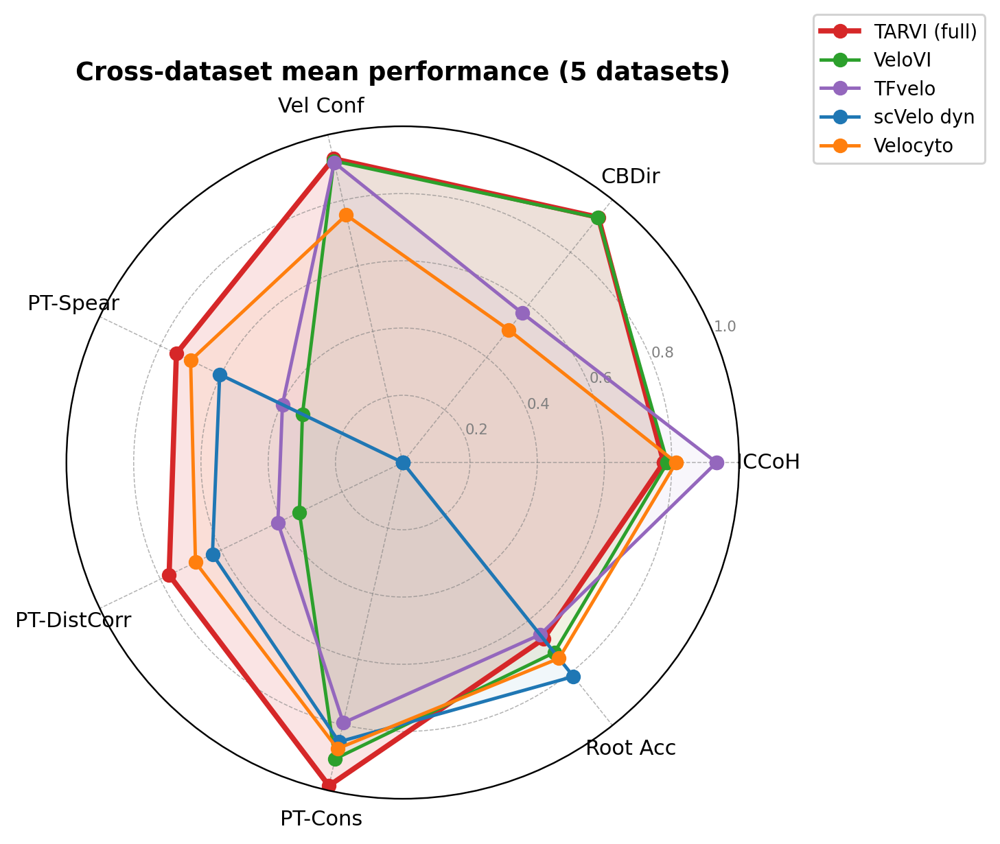
Key observations
- Temporal calibration is the headline win: PT-Spear improves by 126% over VeloVI (0.747 vs. 0.331), with PT-DistCorr and PT-Cons also clearly top.
- Directional metrics are comparable, not a clear win: CBDir 0.933 vs. 0.931 and VelConf 0.927 vs. 0.920 are within run-to-run drift, so TARVI is on par with VeloVI here.
- TFvelo’s ICCoH lead collapses at CBDir (0.569): static TF regression is internally consistent but directionally incorrect.
- scVelo dynamical’s three cosine metrics are undefined because its per-gene EM yields NaN velocities for non-converging genes; its pseudotime metrics remain valid, because the transition-probability graph filters NaN genes first.
- RootAcc is the weakest axis, driven almost entirely by bone marrow (0.493 vs. $\sim$0.93), where the local field is still strong (CBDir 0.947, VelConf 0.937). The miss lies in post-hoc root/terminal extraction, which is brittle on haematopoiesis’s multifurcating topology — making macrostate-based terminal detection a clear next step.
Per-dataset results
| Dataset | Method | ICCoH | CBDir | VelConf | PT-Spear | PT-DistCorr | PT-Cons | RootAcc | Gene-R² |
|---|---|---|---|---|---|---|---|---|---|
| bone marrow | TARVI | 0.770 | 0.947 | 0.937 | 0.418 | 0.412 | 1.000 | 0.493 | 0.350 |
| TFvelo | 0.950 | 0.026 | 0.917 | 0.360 | 0.324 | 0.874 | 0.907 | — | |
| VeloVI | 0.804 | 0.948 | 0.936 | 0.094 | 0.116 | 0.979 | 0.936 | 0.235 | |
| scVelo dyn. | — | — | — | 0.348 | 0.318 | 0.704 | 0.934 | — | |
| Velocyto | 0.800 | 0.078 | 0.679 | 0.306 | 0.244 | 0.654 | 0.642 | — | |
| chromaffin | TARVI | 0.780 | 0.911 | 0.924 | 0.807 | 0.826 | 0.955 | 0.917 | 0.817 |
| TFvelo | 0.922 | 0.005 | 0.883 | 0.052 | 0.027 | 0.640 | 0.778 | — | |
| VeloVI | 0.774 | 0.911 | 0.925 | 0.147 | 0.139 | 0.827 | 0.889 | 0.808 | |
| scVelo dyn. | — | — | — | 0.706 | 0.696 | 0.809 | 1.000 | — | |
| Velocyto | 0.816 | 0.057 | 0.758 | 0.853 | 0.857 | 0.808 | 0.972 | — | |
| forebrain | TARVI | 0.825 | 0.920 | 0.911 | 0.887 | 0.882 | 0.975 | 0.610 | 0.636 |
| TFvelo | 0.938 | 0.946 | 0.941 | 0.424 | 0.384 | 0.957 | 0.983 | — | |
| VeloVI | 0.848 | 0.938 | 0.927 | 0.342 | 0.339 | 0.772 | 0.442 | 0.597 | |
| scVelo dyn. | — | — | — | 0.697 | 0.685 | 0.975 | 0.802 | — | |
| Velocyto | 0.823 | 0.852 | 0.857 | 0.883 | 0.859 | 0.974 | 0.779 | — | |
| pancreas | TARVI | 0.721 | 0.944 | 0.939 | 0.860 | 0.871 | 1.000 | 1.000 | 0.498 |
| TFvelo | 0.930 | 0.971 | 0.967 | 0.783 | 0.783 | 0.933 | 0.531 | — | |
| VeloVI | 0.750 | 0.951 | 0.941 | 0.757 | 0.738 | 0.997 | 1.000 | 0.501 | |
| scVelo dyn. | — | — | — | 0.799 | 0.793 | 0.981 | 1.000 | — | |
| Velocyto | 0.815 | 0.837 | 0.865 | 0.834 | 0.851 | 0.988 | 1.000 | — | |
| scEU organoid | TARVI | 0.783 | 0.945 | 0.926 | 0.765 | 0.862 | 0.998 | 0.334 | 0.084 |
| TFvelo | 0.927 | 0.899 | 0.867 | 0.368 | 0.543 | 0.568 | 0.076 | — | |
| VeloVI | 0.761 | 0.908 | 0.870 | 0.316 | 0.375 | 0.944 | 0.347 | 0.074 | |
| scVelo dyn. | — | — | — | 0.470 | 0.647 | 0.789 | 0.334 | — | |
| Velocyto | 0.813 | 0.702 | 0.618 | 0.623 | 0.609 | 0.943 | 0.334 | — |
Qualitative case study: pancreas
On the pancreatic endocrinogenesis benchmark (Ductal → Ngn3 low/high → Alpha/Beta/Delta/Epsilon), TARVI produces clean directional flow from Ductal through the Ngn3 intermediates to all four mature populations, and a smooth $0\!\to\!1$ latent time (Ductal $\approx0$, mature $\approx1$). VeloVI recovers the same topology but with spurious streamlines near Ductal and an uncalibrated time range (${\sim}[2.4,3.4]$); scVelo dynamical shows circular artefacts at the kinetic switch; TFvelo’s time gradient is reversed (mature earlier than progenitor), mirroring its RootAcc collapse to 0.531; and Velocyto is correctly oriented but with weaker cluster separation.
That last case is the local-vs-global tension in miniature: TFvelo leads on the cosine metrics while ordering the trajectory backwards. It is exactly the failure that TARVI’s TF-regulated $\alpha_i$ and VPT-blended time head are designed to resolve.
13 · Component ablation
To attribute performance to each component we ablate the TF rate, the velocity–time consistency loss (VTC), and the velocity-pseudotime blend (VPT) across all five datasets, and also apply the blend to the unmodified VeloVI graph. We write $\Delta_c\,m=m(\text{TARVI})-m(\text{TARVI}\!-\!c)$ for the marginal contribution of component $c$, and $\delta_{\text{VPT}}\,m=m(\text{VeloVI}\!+\!\text{VPT})-m(\text{VeloVI})$ for the blend on the raw VeloVI graph. The full study is in the supplementary material.
| Config | ICCoH | CBDir | VelConf | PT-Spear | PT-DistCorr | PT-Cons | RootAcc | Gene-R²spl |
|---|---|---|---|---|---|---|---|---|
| VeloVI | 0.787 | 0.931 | 0.920 | 0.331 | 0.341 | 0.905 | 0.723 | 0.442 |
| VeloVI + VPT | 0.787 | 0.931 | 0.920 | 0.714 | 0.724 | 0.986 | 0.658 | 0.442 |
| TARVI − TF | 0.693 | 0.911 | 0.902 | 0.759 | 0.783 | 0.984 | 0.653 | 0.461 |
| TARVI − VTC | 0.792 | 0.934 | 0.928 | 0.700 | 0.705 | 0.986 | 0.556 | 0.474 |
| TARVI − VPT | 0.776 | 0.933 | 0.927 | 0.320 | 0.316 | 0.891 | 0.728 | 0.479 |
| TARVI (full) | 0.776 | 0.933 | 0.927 | 0.747 | 0.772 | 0.986 | 0.671 | 0.479 |
- VPT blending drives the pseudotime ordering: $\Delta_{\text{VPT}}(\text{PT-Spear})=0.747-0.320=0.427$, with every velocity-field metric unchanged between full and $-$VPT (the blend is post-hoc). It is largely model-agnostic: on the raw VeloVI graph $\delta_{\text{VPT}}(\text{PT-Spear})=0.383$; the residual $+0.033$ is what TARVI’s own velocity field adds.
- The TF rate sharpens the velocity field: $\Delta_{\text{TF}}$ is positive on ICCoH ($+0.083$), VelConf ($+0.025$), CBDir ($+0.022$) and Gene-R²spl ($+0.018$), but not on pseudotime — a biologically grounded regulariser that improves field consistency more than $R^2$.
- The VTC loss improves temporal ordering and root identification: $\Delta_{\text{VTC}}(\text{PT-Spear})=0.047$ and $\Delta_{\text{VTC}}(\text{RootAcc})=0.115$, with negligible field effect.
- The blend weight is robust: $\beta{=}0$ (time-head only) and $\beta{=}1$ (pure VPT) are the ablation endpoints, and the global $\beta{=}0.7$ exceeds both — the two temporal signals are complementary.
14 · Qualitative comparison: chromaffin & forebrain
Extending the pancreas case study, the figures below show velocity streamlines (top) and inferred latent time (bottom) for four methods, all rendered identically with a shared cluster palette. On both datasets TARVI gives coherent streamlines and a smooth $0\!\to\!1$ latent-time gradient, consistent with its temporal lead (chromaffin PT-Spear 0.807, forebrain 0.887, vs. 0.147 and 0.342 for VeloVI). TFvelo is omitted as it exports no re-loadable per-cell velocities.
Chromaffin (t-SNE)
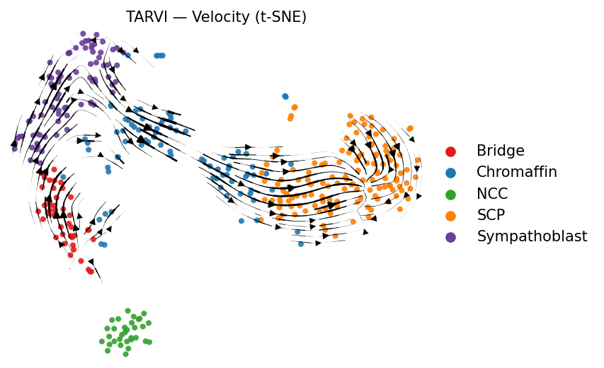
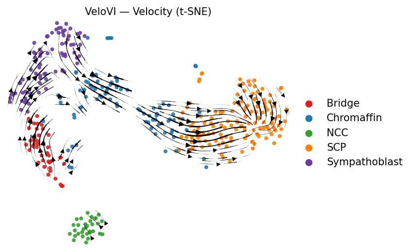
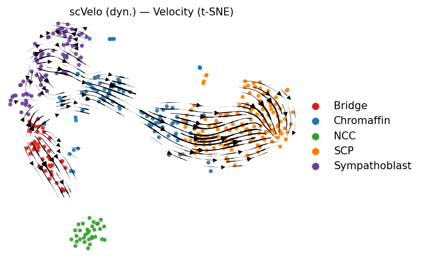
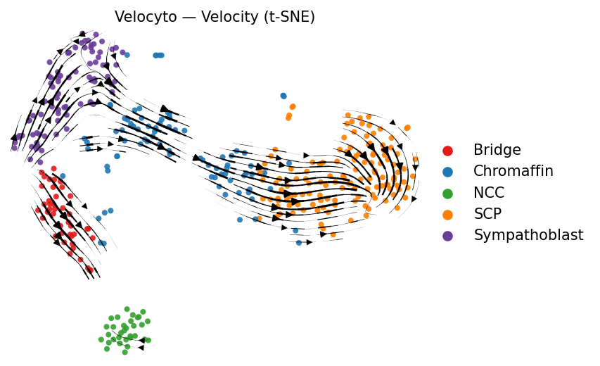
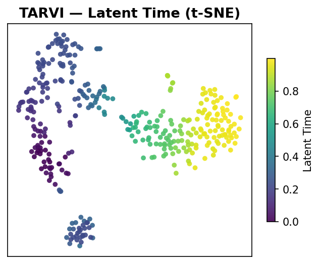
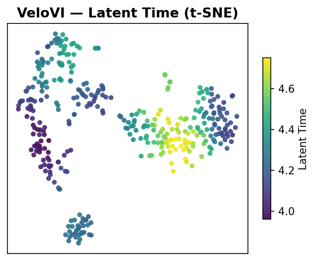
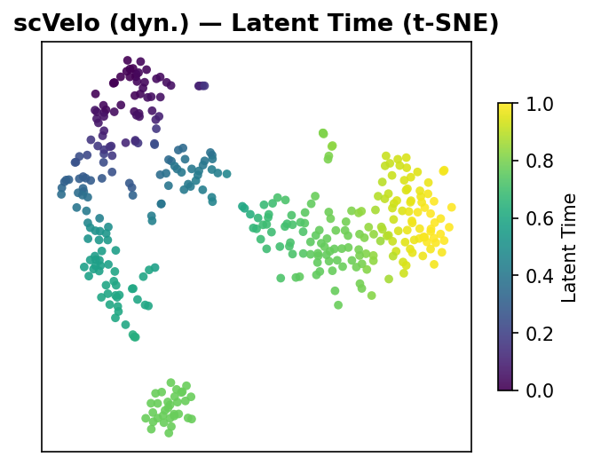
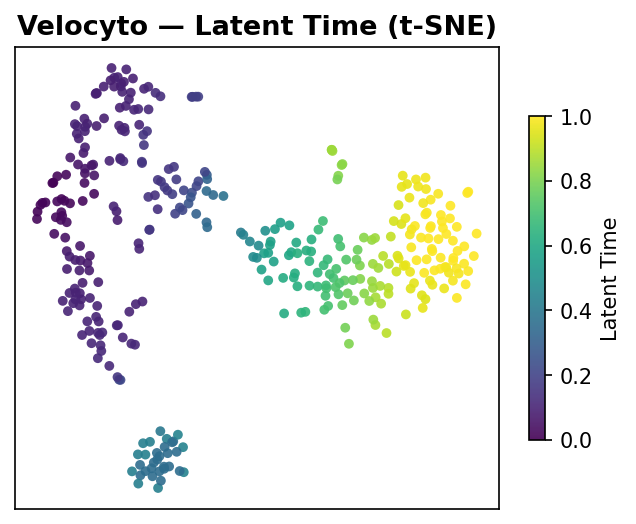
Forebrain (UMAP)
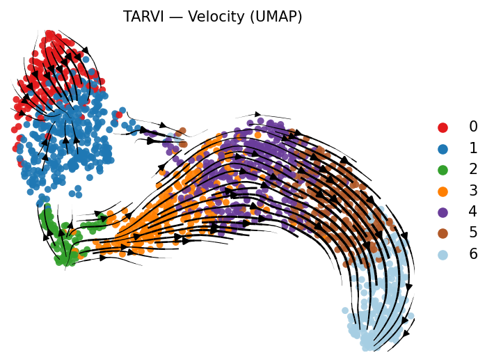
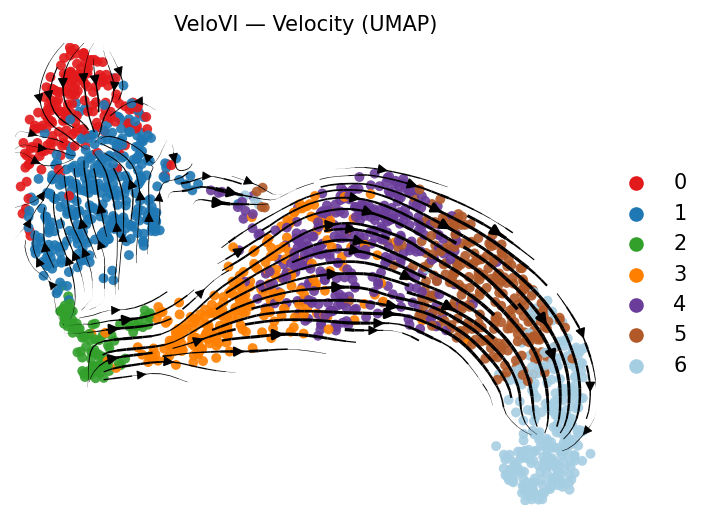
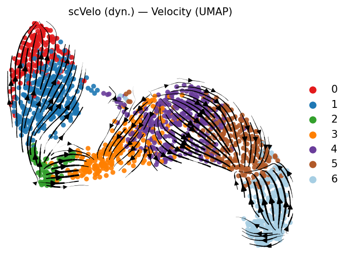
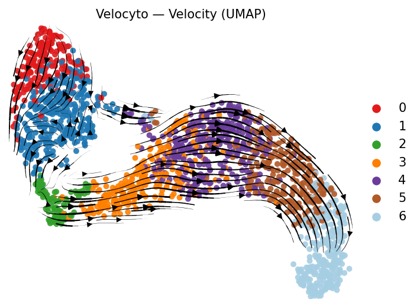
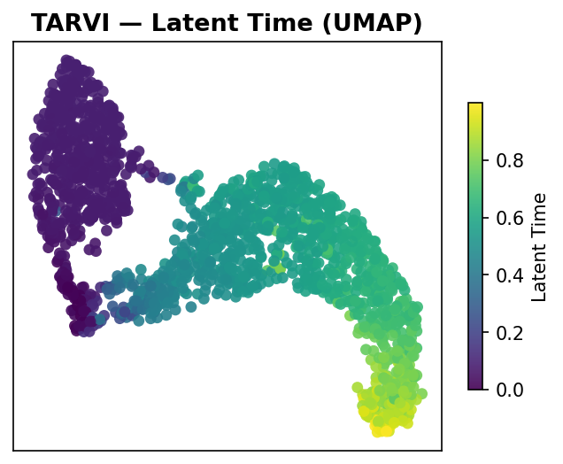
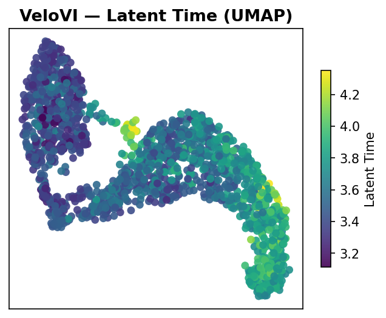
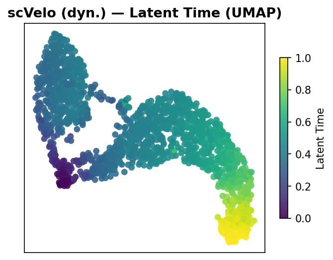
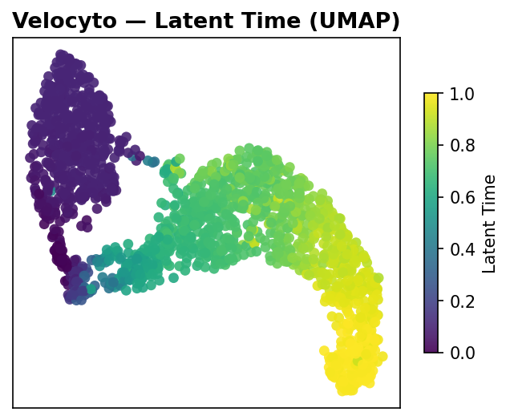
15 · Reproducibility & limitations
All results use a fixed random seed and a deterministic preprocessing pipeline, and we report single-run point estimates. Run-to-run drift on the aggregate means is $\le0.01$, which is the right scale for reading small differences: gaps on that order (the directional metrics) are ties, whereas the pseudotime contributions are an order of magnitude larger.
A few limitations bound these conclusions:
- No multi-seed study. We report no confidence intervals or paired significance tests.
- The TF prior is incomplete by construction. It is rebuilt per dataset from the (incomplete, tissue-context-dependent) ENCODE/ChEA databases; genes lacking reliable TF edges fall back to VeloVI-like behaviour, so outside the ENCODE/ChEA scope we expect TARVI to approach the no-TF regime rather than to fail.
- RootAcc is brittle on multifurcating topologies (bone marrow); macrostate-based terminal detection is a clear next step.
- Most auxiliary losses encode assumptions, not facts. If cells genuinely move incoherently in some system, the structural priors will bias the result.
- VeloTrace could not be included — a concurrent method targeting the same gap, it has no public code release that would allow a faithful re-implementation under our protocol.
16 · Conclusion
TARVI is a principled, modular deep generative model for RNA velocity that integrates transcription-factor regulation, a supervised residual time head, ODE-aligned auxiliary losses, and velocity–pseudotime blending into a single variational framework. Across five biologically diverse datasets and four baseline methods, it matches the strongest baseline on cross-boundary direction accuracy and leads on pseudotime quality, with a 126% improvement in Spearman pseudotime correlation over VeloVI. The implementation, benchmark harness, and evaluation suite are available in the repository.
The paper received the Best Paper Award in the Biomedical Engineering and Instrumentation track at MERCon 2026 (Moratuwa Engineering Research Conference, IEEE), University of Moratuwa, Sri Lanka.
17 · Citation & references
@inproceedings{adhikari2026tarvi,
title = {TARVI: Transcription-Factor Aided RNA Velocity Inference with
Supervised Latent Time and Velocity-Pseudotime Blending},
author = {Adhikari, Chandula and Dassanayake, Sandeep and Herath, Damayanthi},
booktitle = {2026 Moratuwa Engineering Research Conference (MERCon)},
year = {2026},
publisher = {IEEE},
note = {Best Paper Award, Biomedical Engineering and Instrumentation track}
}Key references
- La Manno et al. (2018) — RNA velocity of single cells (Velocyto).
- Bergen et al. (2020) — Generalizing RNA velocity to transient cell states (scVelo).
- Gayoso et al. (2024) — Deep generative modeling of transcriptional dynamics (VeloVI).
- Li et al. (2024) — TFvelo: gene-regulation inspired RNA velocity estimation.
- Cheng et al. (2026) — VeloTrace: reconciling velocity and trajectory with neural ODEs.
- Haghverdi et al. (2016) — Diffusion pseudotime.
- Liu et al. (2026) — Comprehensive benchmarking of RNA velocity methods.
- Saelens et al. (2019) — A comparison of single-cell trajectory inference methods.
See the paper for the complete bibliography, and the methodology notes for the full derivations behind Part 2.
Acknowledgements
We thank Prof. Mahesan Niranjan (University of Southampton, UK) for his
guidance in conceptualising the work. TARVI builds on the VeloVI generative backbone
(scvi-tools) and the Scanpy/scVelo single-cell stack, and uses ENCODE and ChEA
TF–target annotations.